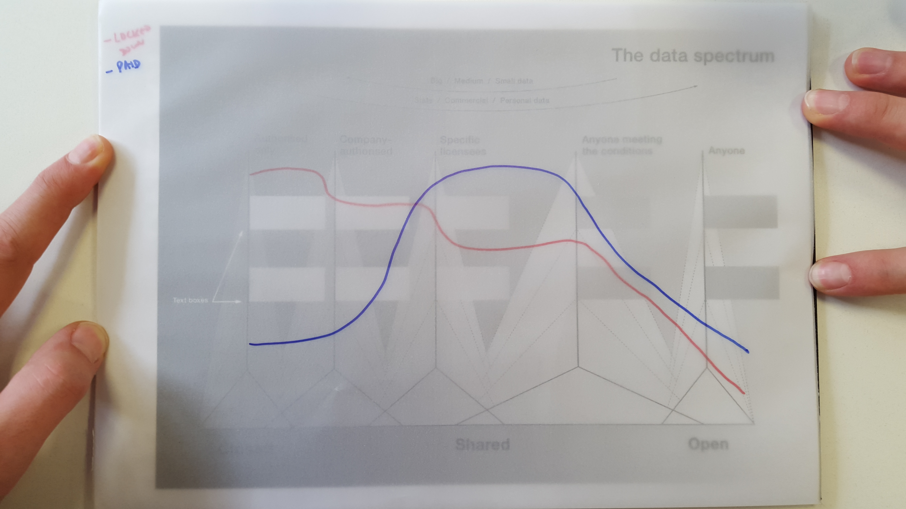

Comment: What would a paid data future look like?
This is the third in a blog series discussing how the future affects data infrastructure. In this blog we focus on the paid future, exploring how it might emerge and what it would mean for us, our data infrastructure, our environments, our businesses and our society.
Before reading this you may want to read the first in the series describing why we are considering three potential data futures or the second on a locked-down future.
Will we expect to get paid for our data? CC BY 2.0, uploaded by [Kiki99](https://www.flickr.com/photos/kiki99/1062744637/ “Kiki99").
In the paid future, data sharing is maximised while closed data is minimised.
The paid future emerges as people and organisations expect to be given money, or monetary discounts from other products, in exchange for access to and the ability to use our data. We expect this to lead to a growth of data monopolies and that the current wave of data-driven innovation and insights will slow down because access to data is reduced overall.
The paid future arises because we expect to get paid for our data
A business model where we receive free services in exchange for data already exists: this is the model used by organisations such as Google. But in this future people start to see this exchange as unequal. People expect to receive money, as well as free services. After all we are told that we are the product – shouldn’t we be paid a cut of the profits?
Some companies and people are already exploring this world of micropayments. In this future, over time, more and more people reject services that don’t offer this option and payment for data becomes the 'the norm'.
This model would not just emerge for personal data. We are already seeing the emergence of businesses to aggregate and sell data from small organisations such as farmers.
To manage the micropayments and data-sharing market a new wave of business models and organisations emerge: ‘data brokers’.
We can make bad choices about data
These data brokers will take various forms. Some may build on personal data stores adding features to handle micropayments for data alongside the planned features to put people in control of data sharing. Others will operate on a cooperative basis with both decisions and benefits shared by a community of people. Still others will be private sector organisations run for profit. In all cases these data brokers will manage micropayments paid to people in exchange for sharing their data.
Whichever models of data brokers emerge, unless we manage to build strong legal frameworks, ethical guidance, and increased data literacy we are likely to find many people and organisations making bad choices.
Making these choices may not be in the best interests of either the seller or data user. Due to tight financial circumstances, a seller might choose to sell personal data that is subsequently used to discriminate against them. A community might sell data for short-term gains when the same data could have provided more long-term value if published openly. Meanwhile data users will need to consider the possible side-effects of people selling, or being encouraged to sell, data due to financial incentives. Will data users need to focus on screening data for defects in the same way that heath services give extra scrutiny to blood plasma when donors are paid?
There is an implicit assumption, in the paid future, that if the price is right anyone can get access to anything. We choose to share, to a limited audience in exchange for payment, data that could have been released openly or that should have remained closed.
Our comfort with being paid for our data would also extend to our dealings with government. We might not go so far as to expect government to pay us before it uses our data, but, just as we have become comfortable with companies selling data about us to third parties, we would become more comfortable with governments doing the same.
Many governments would be grateful for the extra revenue that this provides but, just like all of us, the public sector can make bad choices about data and we could find more data that should remain open or closed being miscategorised to 'shared'.
Fewer people and organisations can use data
CC BY 2.0, uploaded by [Victoria Pickering](https://www.flickr.com/photos/vpickering/4867901214/ “Victoria Pickering").
We can expect to see much less open and closed data in this future.
As most data is shared it can only be used for specific purposes and, in this future, by those who have paid for it.
Fewer people and organisations can use data. Anyone looking to use data to build a new service will need to ensure that they have existing permissions or buy additional permissions from a data broker.
Legislators are still learning how to regulate the market for online content. A world where we are selling our data to third parties complicates this further.
Significant effort and cost goes into maintaining and managing data-sharing permissions for public sector, business-to-business and business-to-consumer services. The market for these services grows but this is effort that could otherwise have been spent using data to build new services or find new insights.
Businesses need data that is collected or held by others to build new services. Small businesses in particular will struggle to get hold of the data that they need. This favours organisations that have existing revenue streams or data-sharing permissions that allow access to large amounts of data and leads to a skewed and inefficient marketplace, to information asymmetries and monopolies.
The net result of this legal complexity, diverted resources and data monopolies may be market failure. The current wave of data-driven innovation and insights would slow down.

The blue line above shows the paid future on the data spectrum. We’ve overlaid it on the locked-down future to help show the difference between the two.
New services are still built using the shared data layer. These services make this future ‘larger’, both socially and economically, than the locked-down future. Just as with many existing services these new services will improve our society, economy and environment.
But in this future, to maximise data use we can expect data infrastructure to prioritise the needs of the data brokers and data monopolies. These organisations can be expected to control or own more and more of both our personal data and society’s core data assets.
Data infrastructure as toll roads
To use the analogy of data as roads from our last blogpost, in this future a good road network exists but it is a network that is, to a large extent, dominated by toll roads. If you want to travel from A to B, or use data to reach a conclusion, then you have to stop at each junction to pay for the next part of your journey. Some roads would be cheap but probably wouldn't be well-maintained and may not take you where you thought they would. More expensive roads would exist, would be faster to travel on and be more reliable. At each junction you would have to choose which type of road to take.
By analogy, in this scenario, data users may find it hard to afford high-quality data, and their decision-making will be slowed by the administrative burden of accessing the data they need.
We can imagine, using the roads analogy, there would be companies that exist to make your otherwise horrendous journey smoother by selling you smart cards for a journey. Or they might allow you to take an automated route through the toll booths. These are the data brokers. Even they benefit by being able to analyse the data about the roads that you are using and selling that back to the road providers and toll booth operators.
We can extend the analogy further. Data originally comes from people who could benefit from it. It is as if the roads were built by digging up people’s gardens. People that allowed their gardens to be dug up receive a monthly payment from the toll road operators. This payment isn’t huge though and it is difficult to work out how much they deserve given lots of gardens are dug for each of the roads. Besides, the payment is based on how much profit the road creates and the people who own the road say that the maintenance costs are huge.
In the paid future the data infrastructure will need to support this model and streamline it as far as possible. That is how we will maximise use of data.
If we do not act we will continue heading towards the paid future
I suspect that the paid future is the one that we are currently heading to. But like the locked down future, it does not seem to be an attractive prospect.
There is an alternative future where we ensure that data is made available as widely as possible to benefit society as a whole.
In the next article we will discuss this final scenario – the open future – and what we foresee happening in a world where our privacy remains protected but where as much data as possible is published openly.
This is the future that we hope that society will choose, instead of the paid future.
Peter Wells is an Associate at the ODI. Follow @peterkwells on Twitter.
If you have ideas or experience in open data that you'd like to share, pitch us a blog or tweet us at @ODIHQ.